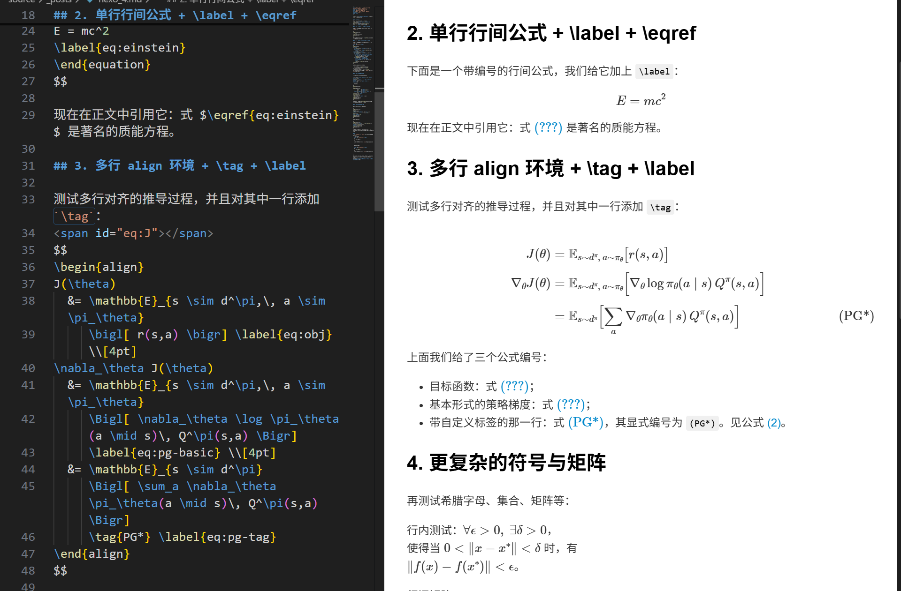

VSCode 系列 - LaTex 公式渲染配置
VSCode 系列 - LaTex 公式渲染配置
数学引擎介绍
MathJax/KaTeX都是浏览器端的LaTeX数学公式渲染库MathJax/KaTeX都不是完整的 LaTeX 编译器，只实现了一部分“类似 LaTeX 的数学命令”，而不是整套 LaTeX 宏包系统- 简单说：
MathJax更像LaTeX，KaTeX更快、更轻。 - 如果最关心
LaTeX语法兼容性，一般推荐MathJax。 MathJax: 目标是尽可能完整地支持 TeX / LaTeX 中的数学命令,MathJax兼容性更完整，但体积更大、渲染相对更重。KaTeX: 官方维护了一个“支持的 TeX 函数列表”，兼容了相当大一部分常用 LaTeX 数学命令。- 只能保证常规符号/环境没有问题（分数、根号、矩阵、积分、求和、cases、对齐环境等），
- 一些冷门命令、特殊宏包、自定义命令需要手工改写或者会直接报错
👉 LaTeX 兼容性: MathJax >
KaTeX
markdown 的渲染机制
.md → .pdf
1
2
3
4
5input.md
└─(Pandoc 解析 Markdown)
└─ 生成一个 .tex 中间文件（包含公式的 LaTeX）
└─ 调用 pdflatex / xelatex / lualatex
└─ 得到 out.pdf.md → .html
1
2
3
4
5input.md
└─(Markdown 解析器：markdown-it / pandoc / remark 等)
└─ 生成 HTML 页面（.html）
├─ 方案 1：页面里嵌入 MathJax 脚本
└─ 方案 2：构建时就用 KaTeX 预渲染公式.md 预览
1
2
3
4input.md (在 VSCode 里打开)
└─ 内置 markdown-it 解析 Markdown
└─ 内置 KaTeX 渲染 $...$ / $$...$$
└─ 在侧边的 WebView 里显示预览
| 流程 | 典型实现方式 | 是否用 LaTeX 编译器 | 是否用 MathJax/KaTeX |
|---|---|---|---|
| md → PDF（LaTeX 路线） | Pandoc → .tex → xelatex |
✅ 是 | ❌ 否 |
| md → PDF（HTML 路线） | md → HTML → 浏览器打印/Chromium | ❌ 否 | ✅ 一般用 MathJax/KaTeX |
| md → HTML | Hexo/Hugo/MkDocs/Jekyll + 插件 | ❌ 否 | ✅ 通常 MathJax 或 KaTeX |
| md 在 VSCode 预览 | 内置 Markdown 预览 + KaTeX | ❌ 否 | ✅（默认 KaTeX） |
| md 在 VSCode + MPE 等 | 扩展自己加载 MathJax/KaTeX | ❌ 否（除非扩展特意调用 LaTeX） | ✅ 视扩展而定 |
安装支持 MathJax 的预览插件
安装
Markdown Preview Enhanced（MPE）插件使用
MPE插件预览:Ctrl+Shift+P→Markdown Preview Enhanced: Open Preview to the Side→ 回车- 或者
右键编辑区→Markdown Preview Enhanced: Open Preview to the Side - 注意：
MPE默认用KaTeX渲染公式，不支持 LaTex 语言的align等公式环境和\label、\eqref等公式引用命令。KaTeX的具体渲染情况见下图。

VS Code 配置
MPE 的数学引擎为 MathJax
- 修改 MPE 插件的数学引擎为
MathJax：因为MPE默认用KaTeX渲染公式，需要把 MPE 的数学引擎改成MathJax，具体操作如下ctrl + ,→Settings页面 →Code Actions on Save选项 → 点击Edit in settings.json1
2
3
4
5
6
7
8
9
10
11
12
13{
"editor.fontSize": 20,
"terminal.integrated.commandsToSkipShell": [
"language-julia.interrupt"
],
"julia.symbolCacheDownload": true,
"editor.codeActionsOnSave": {
},
// 添加下面这一行
"markdown-preview-enhanced.mathRenderingOption": "MathJax",
}- 做完上述操作后，重新预览 Markdown
文件，公式应该就能正确渲染了，但是引用公式的编号会错误，例如
\eqref{eq:exp}等都不能正常显示。
 - 修改
MPE的设置文件config.js开启公式自动编号和引用：Ctrl + Shift + P→ 输入Markdown Preview Enhanced: Open Config Script (Global)→ 回车 → 弹出config.js文件，进行如下修改：1
2
3
4
5
6
7
8
9
10
11
12
13
14
15({
katexConfig: {
"macros": {}
},
mathjaxConfig: {
tex: { tags: 'all' }, // ★关键：给所有行间公式自动编号，支持 \label / \eqref
options: {},
loader: {}
},
mermaidConfig: {
"startOnLoad": false
},
})tags: 'all'是MathJax v3推荐的写法，实测在MPE里可以让所有display公式自动编号，并且\label/\eqref生效。
如果同时装了 Markdown All in One 等其他
Markdown 插件，预览冲突的话，可以把其他插件的
自动打开预览 功能关掉，只保留 MPE 的
自动打开预览 功能即可。
VSCode 系列 - LaTex 公式渲染配置
http://yylustb.github.io/2025/11/17/code/vscode/vscode_math/